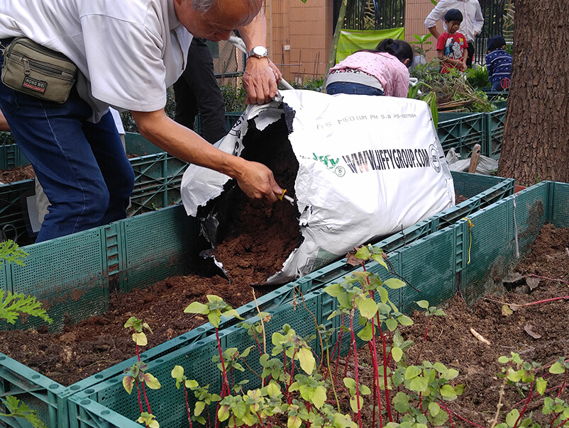

Kai Shing Management Services Limited (Kai Shing) and Supreme Management Services Limited (Supreme) have been committed to implementing green management. This year, Kai Shing and Supreme received over 60 awards at the "Hong Kong Green and Sustainability Contribution Awards 2024" organised by the Hong Kong Quality Assurance Agency, making it the property management companies with the most awards. In addition to receiving awards such as "Pioneering Organisation in ESG Disclosure Enhancement", "Outstanding Award for Excellent Contribution to Sustainable Property (Property Management) - Promote Environmental Protection", "Outstanding Award for Excellent Contribution to Sustainable Property (Property Management) - Promote Community Caring", "Management Award for Net-Zero Contribution (Property Management) - Visionary Blueprint towards Net-Zero", "Pioneer Award Excellence for ESG Connect", "Gold Pioneer for ESG Connect (Environment)" and "Gold Seal for Contribution to Sustainable Property" etc., Kai Shing also won the newly established "Mentor Pioneer Award for ESG Connect" which recognises the outstanding achievements of the company in fostering the development of an ESG ecosystem.
As a pioneer in the property management industry, Kai Shing has been actively utilizing its resources to collaborate with different organisations to enhance sustainable development, improve service quality through technology, and further enhance the energy efficiency of properties. For example, a shopping mall managed by Kai Shing has collaborated with a local university to utilize the university's self-developed smart meter and remote meter reading system. The system can wirelessly collect real-time water usage data from water meters and analyse the overall water consumption patterns of the property using smart meters and artificial intelligence. It helps the management team identify potential water leakage issues and high water consumption activities. With the data in hand, the team can develop water-saving plans accordingly, to improve water efficiency and achieve the vision of sustainable development.